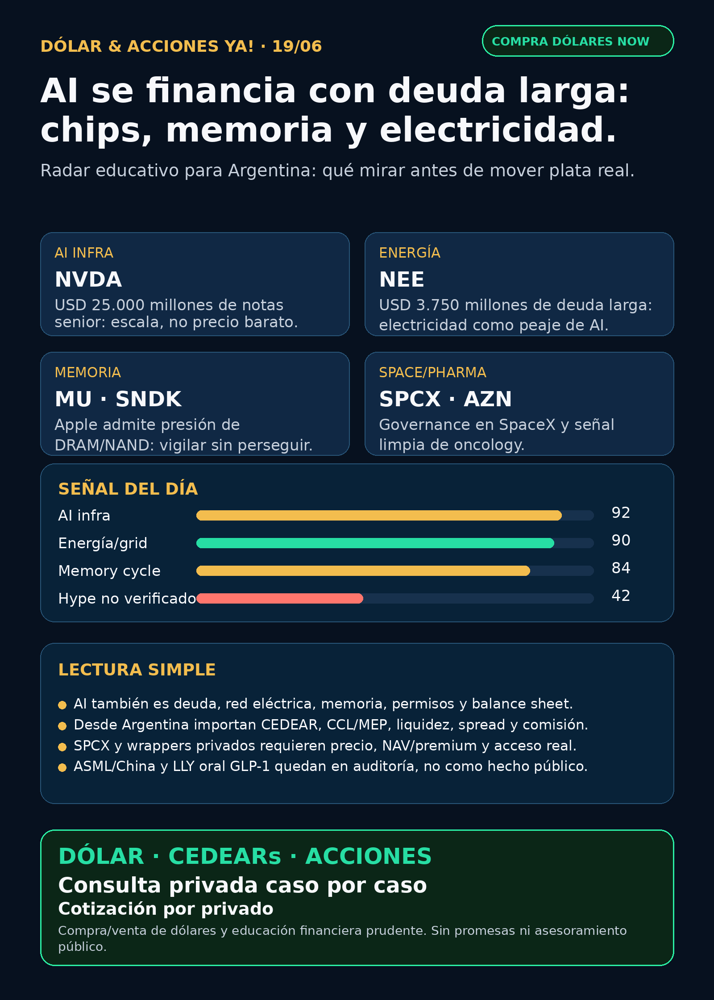

AI se financia con deuda larga: chips, memoria y electricidad.
Reporte educativo para Argentina: fuentes verificadas, capa dólar/CEDEARs y cero recomendación personalizada.

Dólar & Acciones YA — Radar completo — 19/06
Lectura simple del día
La señal de hoy es menos glamorosa que un robot y más importante para entender mercado: la AI se está financiando como infraestructura crítica. NVIDIA cerró una emisión de USD 25.000 millones de notas senior y NextEra levantó USD 3.750 millones de deuda híbrida larga. En criollo: el trade de AI no vive solo de modelos; necesita chips, memoria, electricidad, red y balance sheets capaces de pagar obras gigantes.
Para una persona en Argentina, la traducción no es “comprá tal ticker”. La traducción es: buena empresa ≠ buen precio ≠ buen instrumento local ≠ buen tamaño de cartera. Hay que mirar vía global/US, CEDEAR si existe, liquidez, spread, comisiones y CCL/MEP antes de mover plata.
Dólar Argentina — snapshot operativo
- BlueLytics: oficial compra $1.420,00 / venta $1.470,00; blue compra $1.448,00 / venta $1.480,00; timestamp 2026-06-19T08:45:52.660101-03:00.
- CriptoYa: MEP AL30 24h $1.467,91 (2026-06-18T16:56:58-03:00); CCL AL30 24h $1.509,19 (2026-06-18T16:56:51-03:00); USDT ask $1.517,10.
- Uso práctico: estas referencias sirven para leer contexto. Para ejecución real se usa broker/mesa en vivo, con spread, comisiones y liquidez.
Tesis central
AI dejó de ser solo “quién tiene el mejor modelo”. Hoy el moat se reparte entre:
1. Financiamiento: quién puede levantar deuda/capital largo sin romper el balance.
2. Chips y memoria: GPUs, HBM, DRAM, NAND y storage.
3. Energía y grid: generación, transmisión, distribución, software de red y permisos.
4. Distribución/regulación: Apple muestra que el moat App Store puede seguir fuerte, pero el take-rate tiene presión regulatoria.
5. Instrumento correcto: desde Argentina importa tanto el activo como la forma de acceder.
Radar educativo por calidad de señal — no es ranking de compra
1) NVIDIA / NVDA — AI financiada como infraestructura
- Qué pasó: SEC 8-K: el 18/06/2026 NVIDIA completó una oferta de USD 25.000 millones de notas senior unsecured en tramos 2028–2056.
- Por qué importa: una megacap con caja igual usa deuda larga para optimizar balance mientras AI infra exige capital enorme. Esto confirma escala, no precio barato.
- Estado: señal fortalecida / en radar.
- Riesgo: valuación exigente, China, competencia, concentración de capex y expectativas ya descontadas.
- Fuente: https://www.sec.gov/Archives/edgar/data/1045810/000119312526275783/d48176d8k.htm
2) NextEra / NEE — electricidad como segundo peaje de AI
- Qué pasó: SEC 424B2: NextEra Energy Capital Holdings ofreció USD 3.750 millones de junior subordinated debentures 2056/2066, garantizados por NEE.
- Lectura en criollo: si AI necesita data centers, necesita energía. Las utilities con acceso a financiamiento largo pueden ser parte del cuello de botella.
- Estado: fortalece tesis energía/grid; no es señal automática de compra.
- Fuente: https://www.sec.gov/Archives/edgar/data/753308/000119312526273933/d138800d424b2.htm
3) Memoria / MU, SNDK, WDC — la escasez volvió al centro
- Qué pasó: Business Insider reportó que Tim Cook dijo al WSJ que los aumentos de precio por memoria eran inevitables por costos de DRAM/NAND. El artículo marcó subas intradía de SNDK, MU, WDC, SK Hynix y Samsung.
- Por qué importa: la presión no está solo en HBM para data centers; también se filtra al hardware de consumo. Eso pone a memory/storage en radar.
- Estado: fortalece tesis memory / vigilar, sin perseguir precio.
- Fuente: https://www.businessinsider.com/apple-price-increases-memory-stocks-ai-mu-sndk-wdc-aapl-2026-6
4) Apple / AAPL — moat fuerte, pero dos presiones
- Qué pasó 1: presión de costos por memoria según fuente secundaria.
- Qué pasó 2: Apple anunció cambios a iOS en Brasil bajo acuerdo con CADE: marketplaces alternativos, pagos externos y nueva estructura de comisiones.
- Lectura: Apple no está rota. Pero la tesis de servicios “intocables” recibe presión regulatoria también en LatAm.
- Estado: vigilar margen hardware/servicios.
- Fuente primaria: https://www.apple.com/newsroom/2026/06/apple-announces-changes-to-ios-in-brazil/
5) SpaceX / SPCX — empresa pública real, pero no simple para Argentina
- Qué pasó: SEC 8-K: SpaceX eligió a Roelof Botha como director independiente y miembro del Audit Committee.
- Contexto: viene después del IPO y de señales previas como la adquisición/fusión con Anysphere/Cursor. Eso suma institucionalización.
- Estado: en radar alto / fortalece gobernanza.
- Riesgo: valuación, liquidez, spread, acceso Argentina/US, régimen fiscal/compliance, tamaño de posición. No confundir SPCX directo con DXYZ/RVI.
- Fuente: https://www.sec.gov/Archives/edgar/data/1181412/000162828026043865/spaceexplorationtechnologi.htm
6) AstraZeneca / AZN — salud fuera del hype GLP-1
- Qué pasó: SEC 6-K verificó aprobación estadounidense de Truqap/capivasertib + abiraterone/prednisone para prostate cancer PTEN-deficient.
- Lectura: pharma no es solo GLP-1. Oncology con aprobación regulatoria y biomarcadores sigue siendo carril serio.
- Estado: fortalece tesis.
- Fuente: https://www.sec.gov/Archives/edgar/data/901832/000165495426005964/a1987i.htm
Watchlist base — seguimiento rápido
- RKLB: revisado; sin señal fundamental primaria nueva fuerte en esta corrida. Sigue en radar space/defensa, pero no titular de hoy.
- NVDA: señal fuerte por deuda larga; mirar uso de fondos, costo financiero y capex.
- PLTR: revisado; sin filing material nuevo fuerte. Narrativa AI vigente, valuación exigente.
- TSM: revisado; sin señal primaria nueva fuerte. Foundry sigue siendo cuello de botella estructural.
- MU: fortalecida indirectamente por señal de memoria; falta primaria propia para elevar más.
- GOOGL/GOOG: cloud/TPUs/data centers en radar; sin señal fundamental nueva fuerte hoy.
- AAPL: señal mixta: costo de memoria + presión regulatoria Brasil.
- HOOD: sin fuente primaria nueva hoy; sigue vigente carril de trading agents con controles fuertes.
- TSLA: autonomía/robotaxi en radar; sin señal primaria nueva más fuerte que infra/energía.
- ASML: apareció claim Reuters/Bloomberg sobre China/export controls, pero Reuters bloqueó con DataDome. NO VERIFICADO hasta fuente accesible.
- Gold/GLD/GOLD/B: no hablar de precio/tesis sin instrumento exacto. GLD no es GOLD y “B” puede ser otra cosa.
- RVI/DXYZ: wrappers private-tech; sirven para educación, no para vender acceso limpio a SpaceX/OpenAI.
- AVGO: supply chain AI relevante por networking/custom silicon; sin evento material nuevo en esta corrida.
Energía y capa Argentina
El carril energía queda activo porque AI necesita electricidad estable. En Argentina, revisar energéticas es obligatorio pero no automático:
- CEPU / Central Puerto: SEC Schedule 13G: Cantomi Uruguay reportó 82.481.755 acciones, 5,4% de la clase incluyendo ADSs. Es ownership relevante, no catalizador operativo.
- YPF: Vaca Muerta/gas/petróleo, deuda y riesgo político; revisada sin señal primaria nueva fuerte hoy.
- Pampa Energía / PAM: generación/gas; revisada sin señal primaria nueva fuerte hoy.
- TGS / TGSU2: midstream/gas; revisada sin señal primaria nueva fuerte hoy.
- Transener/Edenor/TGN: infraestructura/red/regulación; seguimiento educativo.
Para ejecutar desde Argentina: confirmar ticker exacto, especie, plazo, volumen, spread, comisión, CCL implícito y tamaño dentro de cartera.
Fuente CEPU: https://www.sec.gov/Archives/edgar/data/1717161/000110465926075271/xslSCHEDULE_13G_X02/primary_doc.xml
Pharma/salud
- AZN: señal limpia por Truqap/capivasertib.
- LLY/NVO: GLP-1 sigue en radar, pero el claim de “Lilly oral GLP-1 aprobado por FDA” quedó NO VERIFICADO sin fuente FDA/Lilly primaria. No se publica como hecho.
- PFE/REGN/biotech: revisados; sin catalizador clínico primario fuerte para titular hoy.
Defensa, aerospace y guerra física
Carril revisado explícitamente: AVAV, GE Aerospace/GE, RTX, LMT, NOC, GD, HWM, KTOS, BA, ITA/XAR. No apareció contrato, backlog o margen primario suficientemente fuerte para ganarle al tema AI infra/energía. Estado: revisado sin señal fuerte nueva. Mantener radar por drones, counter-UAS, motores, aftermarket militar/comercial y defensa aérea.
Autonomous mobility / physical AI
Revisado: Tesla, Waymo/Alphabet, Uber, Zoox/Amazon y Joby. Sin señal primaria nueva más fuerte que chips/energía/SPCX en esta ventana. Estado: seguimiento.
Space / private wrappers
- SPCX: empresa pública con filings; hoy governance fortalece seguimiento. No accionable automáticamente por precio/acceso.
- RKLB: radar space/launch/defensa; sin señal primaria nueva fuerte hoy.
- DXYZ: SEC NPORT-P verifica exposición económica a SpaceX/OpenAI/Anthropic/Stripe vía LLC/fondos; riesgo NAV/premium/liquidez.
- RVI: N-CSR reportó mix de privadas y money market/gov obligations; no tratar como “comprar OpenAI”.
- VCX/Fundrise Innovation Fund: holdings privados verificados en fuente previa, pero acceso/liquidez Argentina pendientes.
Fuentes: https://www.sec.gov/Archives/edgar/data/1843974/000089418926016628/xslFormNPORT-P_X01/primary_doc.xml · https://www.sec.gov/Archives/edgar/data/2085091/000208509126000012/ck0002085091-20260331.htm
Fintech / AI trading agents
Robinhood, Coinbase y Webull siguen como carril educativo de agentes financieros. Regla Stock Radar: no vender autonomía mágica. Un agente de trading serio necesita datos correctos, modo paper/read-only antes de live, ledger de señales, límites de riesgo, aprobación humana y auditoría.
Crypto gobernado
Carril revisado sin input nuevo fuerte. Mantener como educación + infraestructura + proxies regulados (BTC/ETH/SOL, ETFs/proxies como COIN/MSTR/miners) y no como casino de tokens. Tokens virales nuevos quedan por defecto en auditoría on-chain antes de cualquier mención positiva.
Red flags / hype para ignorar hoy
- “LLY oral GLP-1 aprobado por FDA” sin fuente primaria FDA/Lilly: NO VERIFICADO.
- ASML/China/export controls por Reuters bloqueado: NO VERIFICADO hasta fuente accesible.
- Wrappers DXYZ/RVI como “acceso directo y limpio” a SpaceX/OpenAI: falso o incompleto sin NAV/premium/liquidez.
- Precio de SPCX o cualquier CEDEAR sin broker vivo: no usar para decisión real.
Qué mirar después
1. Si NVIDIA detalla uso de fondos de la deuda y cómo afecta recompra/capex.
2. Si NEE/otras utilities convierten financiamiento en proyectos de red/generación para data centers.
3. Si Micron/SanDisk/WDC confirman por fuente primaria el ciclo de memoria.
4. Si Apple/CADE Brasil se replica en otros mercados LatAm.
5. Si SPCX muestra liquidez, spreads y acceso real desde brokers usados por argentinos.
Servicio privado
Dólar · CEDEARs · acciones · cartera · riesgo. Si querés comprar o vender dólares, invertir en acciones o pensar una estrategia financiera más personalizada, escribime por privado y lo vemos caso por caso. Cotización sujeta a confirmación al momento de operar.
Disclaimer
No es asesoramiento financiero personalizado ni recomendación de compra/venta. Es research educativo para decisión humana: cada caso depende de precio de entrada, horizonte, monto, liquidez, cartera, riesgo y situación fiscal/compliance.
---
Generado: 2026-06-19T08:49:51-03:00. Fuentes principales: SEC EDGAR, Apple Newsroom, Business Insider, BlueLytics, CriptoYa y artifacts de research nocturno de Lola.
Página web principal: https://simulacion-uno-finanzas.web.app/